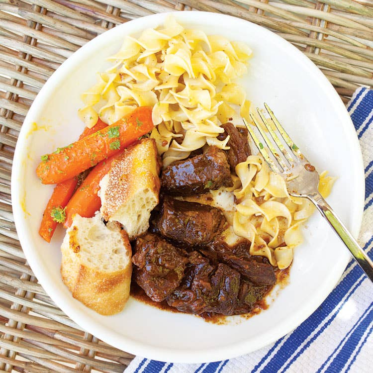

Carbonnade

Unlike French beef stews made with wine, carbonnade relies on the deep, dark flavor of Belgian abbey-style beer. But what really gives carbonnade its distinctive character is the addition of brown sugar and a fillip of cider vinegar, a sweet-sour combination that plays beautifully against the caramelized onions and rich beer.
Ingredients
- 2 lb. beef chuck, cut into 2″ x 1/2″-thick slices
- Kosher salt and freshly ground black pepper, to taste
- 1⁄4 cup flour
- 4 tbsp. unsalted butter
- 4 slices bacon, finely chopped
- 6 cloves garlic, finely chopped
- 3 medium yellow onions, thinly sliced lengthwise
- 2 cups Belgian-style ale, like Ommegang Abbey Ale
- 1 cup beef stock
- 2 tbsp. dark brown sugar
- 2 tbsp. apple cider vinegar
- 3 sprigs thyme
- 3 sprigs parsley
- 2 sprigs tarragon
- 1 bay leaf
- Bread, for serving
Steps
- Season beef with salt and pepper in a bowl; add flour and toss to coat.
- Heat 2 tbsp. butter in a 6-qt. Dutch oven over medium-high heat. Working in batches, add beef; cook, turning, until browned, about 8 minutes. Transfer to a plate; set aside.
- Add bacon; cook until its fat renders, about 8 minutes.
- Add remaining butter, garlic, and onions; cook until caramelized, about 30 minutes.
- Add half the beer; cook, scraping bottom of pot, until slightly reduced, about 4 minutes.
- Return beef to pot with remaining beer, stock, sugar, vinegar, thyme, parsley, tarragon, bay leaf, and salt and pepper; boil.
- Reduce heat to medium-low; cook, covered, until beef is tender, about 1 ½ hours. Serve with bread.